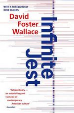

Infinite Jest

by David Foster Wallace (1996)
I've had such a diverse set of reactions to this, and how could I not? The writing is bold and idiosyncratic throughout. The novel's story is not presented in chronological order, and the timeline is obfuscated by the gleeful adoption of 'subsidised time', in which traditional numeric monikers denoting each calender year are replaced by the sponsored labels designated by major corporations - 'Year of the Whopper', and so on - a marvellous concept which nevertheless makes it completely and artificially impossible to tell what the hell's going on until about 500 pages in.
The whole novel unashamedly celebrates the author's literary and formal grammatical credentials - from the extraordinarily-crafted opening scene, where a tragically misunderstood literary genius disastrously fails a university entrance interview, with just a hint of a semi-autobiographical air about him. Scenes of superlative execution are interspersed with a narrative that is, on the whole, told in the third person but in the argot of the currently eminent protagonist, leading to large swathes of the book which are, like, more than conversational in their familiarity. The combination gives rise to a relentlessly inventive stream of neology and malapropism.
While the book resoundingly makes many insightful points by the conclusion, the story which serves as a vehicle for their delivery is, a collision of ideas, introducing entirely new and unexplored premises at the 11th hour, which peter out, ignored and unresolved, by the final page. The jest continues on, I suppose.
The insidious footnotes for which Wallace's writings are well-known do not serve to streamline the prose by separating out incidental annotations, but instead seem specifically employed to elevate the reader's awareness of the footnotes themselves. Including them in the main body of the text would allow for the possibility of a busy reader failing to give each pithy addendum it's full, weighty consideration. Wallace cunningly obviates this possibility, by discreetly giving pause to any reader assiduously trying to do their best with a challenging book, requiring them to invoke the titillating ritual of thumbing forward a literal thousand pages or so, giving an involuntary moment of rest in the narrative in which the reader may properly anticipate the mysterious text to be revealed while they dereference the footnote's numeric identifier, and then a second pause afterwards to properly digest and appreciate, while they thumb a literal thousand pages back again to find where they left off. Three hundred and eighty eight times, no less. Plus sub-footnotes, obviously. Some of these are pages-long tomes of critically insightful dialog between major characters. Many others are completely irrelevant technical specifications. I have to ask, what the fuck is going on here? Does this really make the novel somehow better? While I laughed and cried about the content of many of the footnotes, I remain unconvinced by the mechanism of their delivery.
I rant about these aspects of style because these are definitely the first impressions any reader will have. Getting into the book does require a little work. But fortunately Wallace more than provides the incentive to do so. The book ranges over many areas, but is mostly about addiction, in its many forms, and its relationship to freedom of will and to happiness. These are deep and interesting topics, and are unflinchingly explored with a very keen eye. For every one of the annoyances mentioned above, the book provides powerful rewards for those who stick it out. The heart-wrenching depictions of people going through the utter destruction of their humanity are as touching and insightful as anything I have read.
There are some problems or tasks in life which are small enough that an individual can overcome them by force of will, grinding down the problem until it is flattened and overcome. This approach fails, however, when the problem is too large or too hard. Some problems cannot be crushed by any individual. To navigate past them requires that, instead of trying to demolish the problem, the individual must instead mould themselves to fit around the problem's existing contours. People emerge on the other side of these experiences triumphant but sober - having been changed to their core by the experience. I consider Infinite Jest to belong to this latter class of experience. From the base-camp of its 981 pages (plus 98 of footnotes), it is intimidating and uncompromising. You love it and hate it in equal measure, and it makes no attempt to pander to the former. But as I ploughed on, through it, week after week after week, I grew to enjoy it more and more and more. I began to see reminders of it everywhere I looked. I spotted echoes of its style in the speech of friends who are fans of Wallace. It began, very subtly, to infect my own speech and writing. The topics it covered touched me to the core, changing my outlook on deep issues such as religion. By the time I reached the very last page I emerged, bruised and weary, but also tremendously excited - I actually flipped it right back and re-read the first few chapters all over again.
Now for perhaps the greatest test to date of my supposedly subjectivity-proof rating system. Here goes:
Rating:
10/10: If you are ready for a challenge, that entertains and wrenches in equal measure, stretching you, changing your definitions, taking you on a tour of regions you never knew existed. It will make you laugh and it will make you cry. It will leave you a different person than when you began.
0/10: If you can't be bothered.